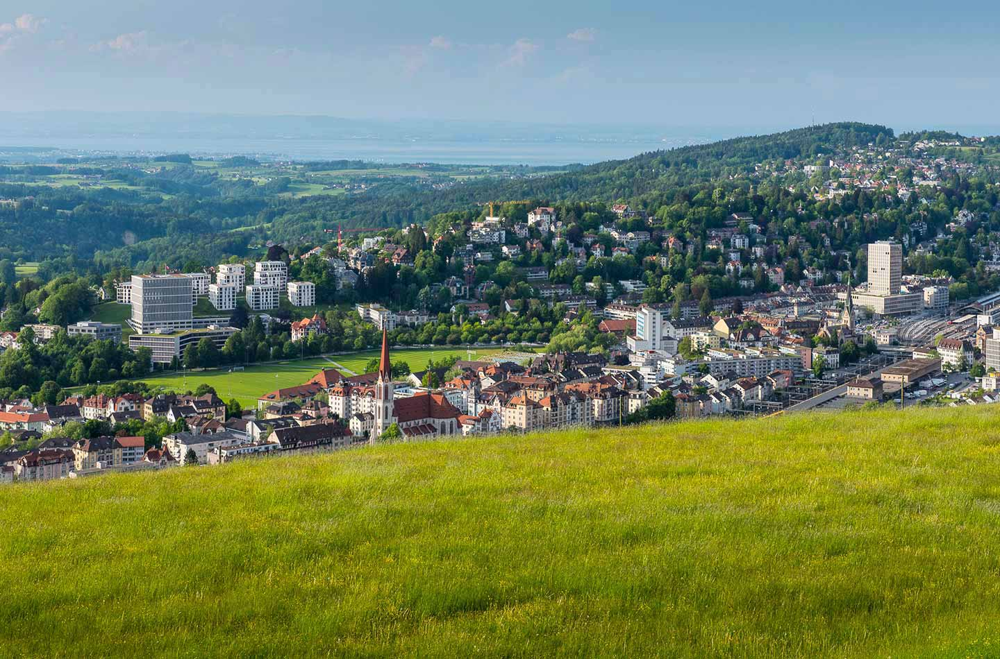

Urban, und doch
im Grünen.
St.Gallen ist eine Stadt mit hoher Lebensqualität. Sie ist diese fantastische Mischung aus Urbanem und grüner Naherholung. Mit dem UNESCO Weltkulturerbe lässt sich gleichermassen brüsten wie mit der Bratwurst an der OLMA. Kulturbegeisterte trifft man aber auch im Palace, in der Kellerbühne oder im Museum. Kunst, Musik und Theater haben hier ein internationales Niveau.

| Lieblingsplätze zu Fuss | |
|---|---|
| 5 Min. | Lokremise – Restaurant, KinoK |
| 10 Min. | Restaurant Lagerhaus |
| 10 Min. | Restaurant Militärkantine |
| 10 Min. | Hauptpost Bibliothek und Café |
| 10 Min. | Sportanlage Kreuzbleiche |
| 12 Min. | Kinderfestplatz |
| 15 Min. | Altstadt & Zentrum |
| Solarius Rosenberg | |
|---|---|
| Haus A | 10 Eigentumswohnungen |
| Haus B | 10 Eigentumswohnungen |
| Haus C | 14 Mieterwohnungen |
| Haus D | 19 Mieterwohnungen |
| Kurze Wege für Alltagsdinge | |
|---|---|
| 5 Min. | am Hauptbahnhof |
| 5 Min. | zur FHS St.Gallen |
| 5 Min. | zum Institut am Rosenberg |
| 7 Min. | zum Bundesverwaltungsgericht |
| 7 Min. | zum KBZ St.Gallen |
| 10 Min. | an die HSG |